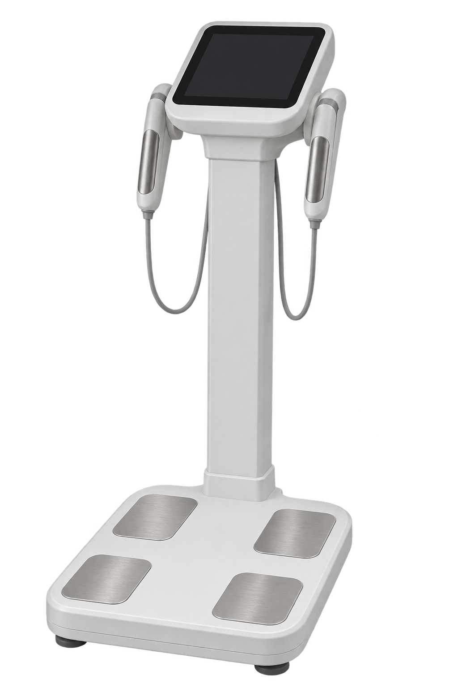

Cuerpo A · Equipo de composición corporal
Composición corporal y metabolismo
El seguimiento permite estudiar la relación temporal entre la adiposidad, los estilos de vida y los indicadores de resistencia a la insulina.

Dos alternativas para cada imagen, dentro de sus tarjetas. Los textos y la landing actual se conservan mientras eliges.
Elige Cuerpo A o Cuerpo B
Elige Cerebro A o Cerebro B